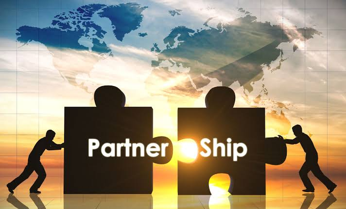

Building the foundation for a safer, stronger, and completely restored community framework.
The California Clean Slate Program is entirely focused on a single mission: building a comprehensive, five-phase continuum of care that bridges our unhoused and struggling neighbors from the streets back into permanent independence. Right now, we are an officially recognized 501(c)(3) public charity—actively gathering the baseline resources, land access, and community power required to launch our operations. We are built on raw community discipline, and we are looking for dedicated partners ready to join us on the ground floor.
Our street outreach and mobile hygiene units depend entirely on reliable, predictable geographic access. We are seeking partnerships with commercial property owners, faith-based organizations, and land owners who are willing to open a baseline staging footprint for our mobile shower and laundry trailers. We seek repeatable, scheduled days and times to establish a consistent pattern of trust with our participants. Our staging operations are entirely self-contained, professionally managed, and secure. We handle all logistics, security monitoring, and post-service cleanup, ensuring your lot remains a pristine, respected asset to the neighborhood.
The final, vital milestone of our continuum is guiding participants into steady, gainful employment. We look to form direct relationships with business owners, commercial managers, and contractors willing to act as an intentional employment pipeline. By partnering with us, you are not taking on a blind risk; you are gaining access to motivated, drug-free individuals who have been stabilized through our treatment partnerships, held accountable by our sober living environments, and are fully equipped with the discipline to work hard and protect your team.
Because we are scaling up our infrastructure as a newly approved 501(c)(3) organization, every single position in our organization is currently voluntary. We are building the engine right now, and we do not have a paid payroll yet. We are calling on eager, community-minded professionals, leaders, and ground-level volunteers who want to invest their skills—whether in administration, legal tracking, logistics, or field outreach—to build solid infrastructure. What we offer you is skin in the game and a proud seat at the table of an organization built to fix a systemic crisis.
For community members who want to accelerate this deployment but cannot volunteer their time or lot space, your direct financial backing is what turns this blueprint into real infrastructure. Your financial contributions are deployed directly into securing outreach gear, sanitation assets, and mobile fleet equipment. Every resource stays local, directly funding the recovery ecosystem.

We treat community capital with absolute operational discipline. Every donation tier is structurally optimized to cover direct physical supplies alongside the fleet logistics, utility management, and capital development infrastructure required to scale.
Fully subsidizes comprehensive mobile hygiene, warm tankless showers, thermal socks, and full on-site sanitation loops for 6 individuals in crisis.
Secures 10 weather-resistant field kits packed with heavy-duty hygiene essentials and thermal apparel, completely scaling our active street outreach capabilities.
Sponsors a full morning of mobile fleet operations. Fully absorbs greywater compliance logistics, generator power systems, transit fuel, and asset maintenance buffers.
Deploys directly into industrial fabrication. Allocates dedicated structural capital toward heavy-duty chassis engineering, tankless heating loops, and utility vaults for our flawless $60k+ mobile fleet assets.
Sponsors major care-framework pipelines. Directs funding to cover structural outreach loops, continuous asset navigation, fuel corridors, and comprehensive regional service logistics to safely shift pathways forward.
Email our operations lead directly at partnerships@californiacleanslateprogram.org to begin a direct conversation about hosting a mobile unit, joining our founding volunteer network, or establishing an employment pipeline.
The California Clean Slate Program is a registered California non-profit corporation and a recognized 501(c)(3) public charity. All financial contributions are fully tax-deductible under IRC Section 170.
Legal Notice: This organization operates strictly as a mobile hygiene, social service, and transitional care continuum. The California Clean Slate Program does not provide legal counsel, record expungement, court representation, or criminal justice re-entry programming.